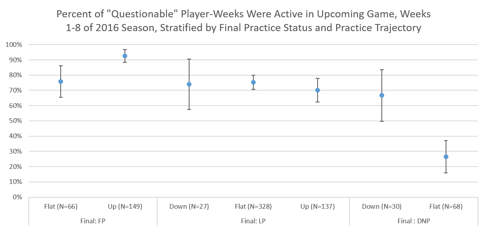
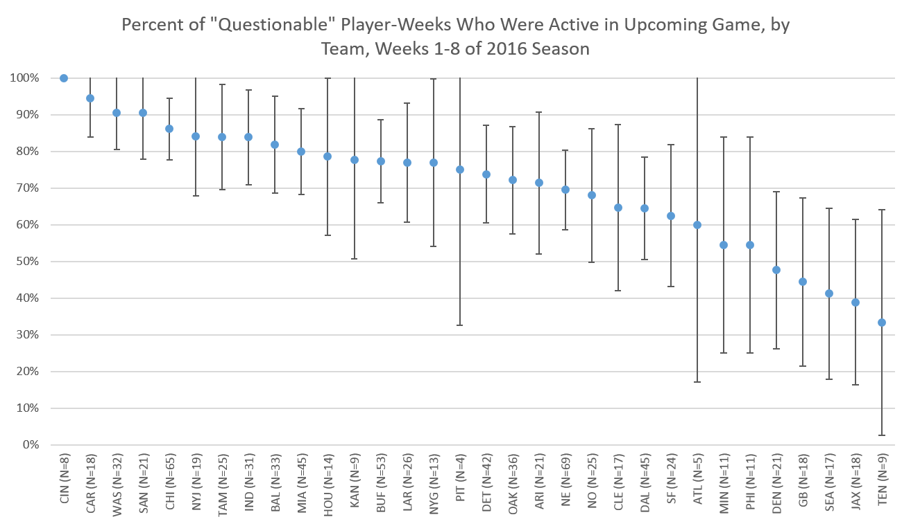

Projecting ‘Questionable’ Players in the Post-Probable Era
In my last post I began looking at the effects of removing “Probable” from the game status portion of the NFL Injury Report this year. This left only three categories for players to fall into: “Questionable,” “Doubtful,” and “Out”.
“Out,” like it always did, means the player is certain to not play. Per our data, “Doubtful” continues to mean essentially the same thing.
“Questionable” is where things get interesting. According to my analysis, about 1/3 of players who would have previously been marked “Probable” in earlier years are now marked “Questionable,” while the other 2/3 simply aren’t listed (i.e. they’re considered “not injured”). This has altered what “Questionable” means in terms of how likely a player is to suit up on game day – in previous years 60-65% played in the next game, but so far in 2016 it’s 73%!
That means the “Questionable” players – already a hard-to-predict group – got even more heterogeneous. But can we look a little deeper and try and identify those more or less likely to suit up for their next game? I’m going to stratify by team, injury type, and practice status to try and find out!
Data Sources
Almost everything is explained in my previous post. The only new information is the practice reports, which came from weekly CBS practice report pages such as this one.
Injury Type
Let’s check on the percent of Questionables that play each week for a few of the major injury types. We’re only using information from the NFL injury reports as outlined in this post, so the categories are going to very broad and a mix of many different kinds of injuries that may not belong together. My apologies for that.

Most injuries seem to be clustered right around the overall average of 73%. Players with quadricep/thigh injuries (82% active) and concussions (85% active) were the most likely to play. Concussions in particular makes sense to me since the return-to-play process portion of the NFL’s concussion protocol, while it has no set timeline, is often hard to complete in 5 days but easier to complete in 7, leaving a lot of players as “Questionable” on the game status report but ready to suit up on game day. I’m not sure what to make of quad injuries – if any trainers or physical therapists or physicians want to weigh in in the comments, please do!
On the other end, players with groin (67% active) and calf (65% active) injuries were the least likely to be active. I’m not sure I have an explanation for that but, again, I would value any input trainers or medical folks can provide down in the comments!
I’ve also included error bars, which represent 95% confidence intervals.1 The intervals all overlap and most of them include the overall average of 73%, so it’s possible there are no true differences among injuries and all we’re seeing is random noise. But if I had to guess, I think we’re seeing a real higher active proportion among concussions and maybe quad/thigh injuries, too. I’m not so sure about the lower ones.
Practice Status
As I outlined in the previous post, teams issue 3 (only 2 if they play on Thursday) “practice reports” during the week that tell us if injured players had “Full Participation” (FP), “Limited Particiation” (LP), or that they “Did Not Participate” (DNP). If a player only had 1 or 2 of the 3 practice statuses (for example, if a guy first strains his hamstring in a Thursday practice) we would expect for a non-Thursday game, we assumed the other practices were “Full Participation.”
I wanted to stratify these statuses in a couple ways:
Last practice status before a game (typically Friday for a Sunday game)
Practice status trajectory. This could be “Flat,” “Up,” or “Down.”
“Up” means a player improved between any earlier practice and his final practice. “Down” means a player’s final practice status was lower than all previous practice statuses. All others were “Flat.” Here are a couple examples, with practice statuses listed from Wednesday to Friday for a Sunday game:
LP LP LP = Flat
DNP FP FP = Up
DNP FP LP = Up
LP DNP FP = Up
FP FP LP = Down
LP FP DNP = Down
You can certainly debate the merits of this categorization scheme, but I think it correctly captures most cases and is good enough for our purposes.
So, let’s take a look at the data!

Heeeeeyyyyy, now we’re cookin’! Overall, if your final practice status was FP/LP/DNP, you played 87/74/39% of the time. We often hear fantasy experts saying they’re concerned if a player doesn’t practice late in the week; this data bears that out, but it’s also not a death sentence.
As far as the trajectories go there’s a bit less variation. Overall, Down/Flat/Up trajectories meant you played 70/68/82% of the time. So if you’re trending up (as I’ve defined it) you’re more likely to play, whereas flat and down trajectories are similar at a bit below the overall average.
When we stratify by both, we see that among player-weeks with full participation in their last practice, those who were trending up (93% active) were way more likely to play than those who stayed flat (76%). That’s kind of surprising since players who were able to practice fully the whole week despite their injury seem like they should be good to go on Sunday, but the data shows that those whose practice status indicates a recovery over the course of the week are even more likely to suit up.
Among players with limited participation at their last practice report, there wasn’t a whole lot of variation by trajectory. Player-weeks with down/flat/up trajectories played 74/75/70% of the time. So it looks like if a player is limited at practice late in the week, they’re basically of average likelihood to play.
Among players who did not participate in their final practice, those who had declined from mid-week actually had a decent chance to still play: 66%. That’s kind of surprising to me – it may be semi-injured guys just being given Friday off? Meanwhile, if a guy doesn’t practice all week his chances of playing are pretty low at 26%. Honestly, that’s still higher than I was expecting!
Team
Teams have historically exhibited quite a bit of variation in what proportion of their “Questionable” players suit up on Sunday. Did this continue through the first 8 weeks of 2016?

Apologies for the small text, but I thought it was still easiest to look on one chart. Overall you see quite a bit of variation by team – from Cincinnati with 100% of questionable players suiting up to Tennessee with just 33%. Not surprisingly, both of these extremes have extremely small sample sizes (9 and 8 player-weeks, respectively), so I imagine we can expect some regression to the mean as the season drags on.
You see a pretty even distribution of proportions across teams – they follow a gradation rather than being in “high” or “low” clusters. The teams don’t break into camps where some have 90% of the questionable players play and others 40%. They may very well all have a common understanding of “Questionable” but just be experiencing random variation. So I would caution against using this data – at least just this 8-week set – to make any reliable predictions about what teams will do next with their Questionable guys.
As a sidenote, New England – where Bill Belichick has a reputation for…strategic use of the injury report – has listed a league-high 69 (nice) player-weeks as Questionable through 8 weeks. However, they have played at a near-average clip, suiting up 70% of the time. I’m a Dolphins fan, and even I have to admit that doesn’t support the shady Belichick narrative.
{kind=link}
Conclusions and Limitations
We looked at the proportion of Questionable players that play each week by injury type, practice status, and team. While we saw variation by team, practice status seems by far the most useful for projecting actual game day status. If your final practice status was FP/LP/DNP, you played 87/74/39% of the time; if you followed a Down/Flat/Up trajectory (as I’ve defined it), you played 70/68/82% of the time.
Your best source of information is always going to be individual reports on game day about whether a guy is playing or not. Also, my data says nothing about whether a guy plays his regular number of snaps or not. But these data help provide some context that can inform rough guesses earlier in the week about whether a player is going to play, and that’s not not useful!
Footnotes
For the stats nerds, all intervals in this article were calculated using the normal approximation to the binomial distribution.↩︎